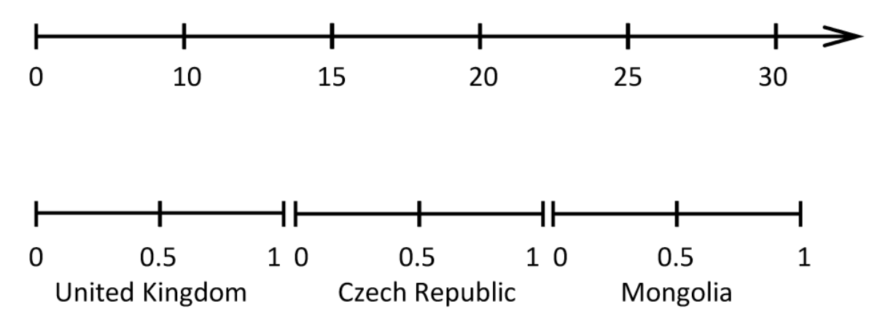
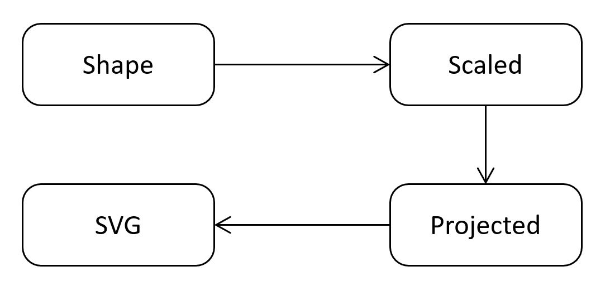
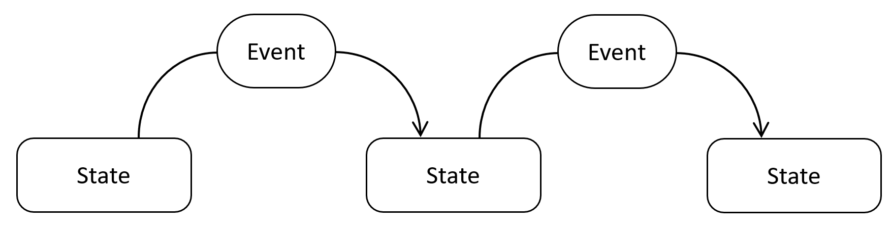

val string : value:'T -> string
Full name: Microsoft.FSharp.Core.Operators.string
--------------------
type string = System.String
Full name: Microsoft.FSharp.Core.string
val float : value:'T -> float (requires member op_Explicit)
Full name: Microsoft.FSharp.Core.Operators.float
--------------------
type float = System.Double
Full name: Microsoft.FSharp.Core.float
--------------------
type float<'Measure> = float
Full name: Microsoft.FSharp.Core.float<_>
val seq : sequence:seq<'T> -> seq<'T>
Full name: Microsoft.FSharp.Core.Operators.seq
--------------------
type seq<'T> = System.Collections.Generic.IEnumerable<'T>
Full name: Microsoft.FSharp.Collections.seq<_>
Full name: Microsoft.FSharp.Core.bool
type MeasureAttribute =
inherit Attribute
new : unit -> MeasureAttribute
Full name: Microsoft.FSharp.Core.MeasureAttribute
--------------------
new : unit -> MeasureAttribute
Designing composable functional libraries
not just for visualization
Tomas Petricek
University of Kent and fsharpWorks
tomas@tomasp.net | @tomaspetricek
Motivation
Functional thinking about charts

What is this
talk about?
Making facts great again
Building more open, transparent and engaging data visualization
What is this
talk about?
Functional thinking!
New look at an interesting and tricky domain

What is a chart?
A very long list...
Bar chart
Column chart
Line chart
Area chart
Scatter chart
Histogram
Combo chart???

What is a chart?
Uh...
Maybe chart is just an SVG graphics with text, shapes and pixel coordinates?
What is a chart?
D3 is a too low-level answer
1: 2: 3: 4: |
|
Google Charts is a too high-level answer
1: 2: 3: 4: |
|

What is a chart?
A chart where the reader has to make a guess before seeing the answer.
What is a chart
Fundamentals of a chart
Projections from domain values to pixels
Shapes such as areas and lines
Composition of multiple shapes and text
Interactivity state depends on user input
Composing shapes
Fundamentals of a chart
DEMO
Creating a bar chart
Scales
Continuous and categorical scales
Scales
Continuous and categorical scales
1: 2: 3: 4: 5: 6: 7: |
|
Modelling charts
A chart is an algebraic data type
1: 2: 3: 4: 5: 6: 7: |
|
Modelling charts
Avoiding X and Y value mix-up!
1: 2: 3: 4: 5: 6: 7: |
|
Projections
From domain space to pixel space
1:
|
|
1: 2: 3: 4: 5: |
|
DEMO
Line chart with background
DEMO
Adding a chart title
Composition
There are more ways than one!
1: 2: 3: 4: 5: |
|
Domain modelling
Functional thinking about charts
Domain primitives rather than graphics primitives
Domain values rather than pixels!
Composition in multiple different ways
Units of measure so that I can implement it :-)
Library design
Three functional design patterns
DEMO
Refactoring chart title
Layers of abstraction
From charts to pixels

Transformations
Shape rendering pipeline
DEMO
Creating animated bar chart
State + Update
Elm-based application architecture
Summary
Functional thinking about charts
Composable libraries
Fundamental question
What is the thing we're working with?
Domain modelling
Primitives and composition (with units)
Functional patterns
Multiple layers, transformations, states and updates
Tomas Petricek, University of Kent and fsharpWorks
tomas@tomasp.net | @tomaspetricek